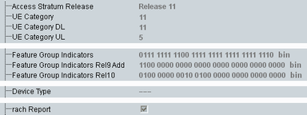

At the highest level, the report lists the following information.

Supported release of the E-UTRA layer one, two and three specifications.
Remote command:UE categories of the UE, defining several transport channel and physical channel parameters, for UL and DL (for details, see 3GPP TS 36.306).
Remote command:32-bit value, containing one bit per feature group ("1" = supported, "0" = not supported).
The features assigned to the individual bits are listed in the annex of 3GPP TS 36.331, table B.1-1.
Remote command:32-bit value, containing one bit per feature group ("1" = supported, "0" = not supported).
The features assigned to the individual bits are listed in the annex of 3GPP TS 36.331, table B.1-1a.
Remote command:32-bit value, containing one bit per feature group ("1" = supported, "0" = not supported).
The features assigned to the individual bits are listed in the annex of 3GPP TS 36.331, table C.1-1.
Remote command:- "noBenFromBatConsumpOpt" means that the UE does not benefit from the optimization.
- An empty field means that the UE does benefit from the optimization.
Support of RACH report delivery.
Remote command: